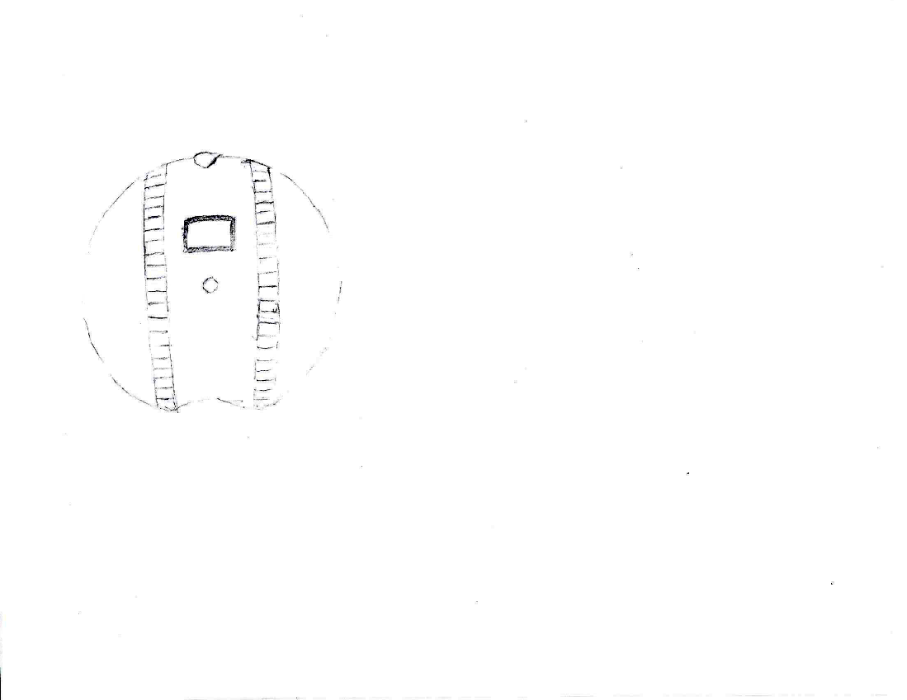

Unnamed Project
I considered building this as a successor to the V.O.R.P. project. It was intended to be a relatively large sphere-shaped robot. Two tread-like bands would rotate to give it mobility. The bottom of the sphere bends inward to allow the tread-like bands to make contact with the ground. There is some sort of a control panel on the front with several switches and buttons. There also appears to be a small panel that opens on the front (I believe I may have been planning to put some sort of a Nerf blaster behind it). The head has two different illuminated eyes. There is an ultrasonic sensor mounted on each side. Next to each of them there is also a PIR sensor. I believe I was going to try to see if it could track a person with these PIR sensors.
Here is the back of the robot. It has a screen and another PIR sensor. All of the electronics would be controlled by an internal Raspberry PI. The back of the head is visible at the top.
I then put together a 3D model in order to get a better idea of what it might look like. This was not meant to be printable; it was just to give a vague idea of what it might look like. This project was abandoned shortly after the creation of this 3D model.